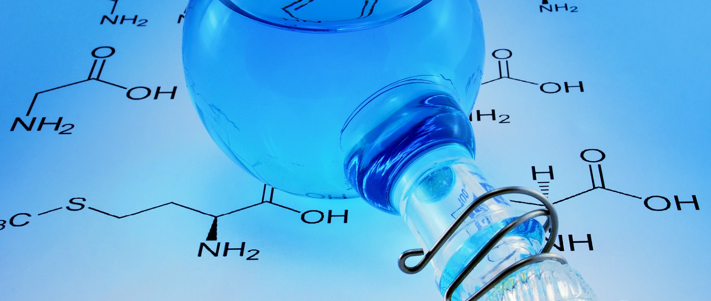

Eau
Publié le 27 février 2017

L’eau joue un rôle très important dans la bière par les réactions chimiques tout au long du procédé de fabrication qui sont régies par les minéraux dissouts. En effet, les ions présents contrôlent le pH, la dureté, l’alcalinité, l’alcalinité résiduelle et la teneur en minéraux. Lorsqu’un ajustement est effectué sur un de ses facteurs, il est possible que les autres soient également altérés. On suggère de ne pas essayer de reproduire une eau spécifique, mais plutôt de l’utiliser comme ligne directrice. L’idée générale est de réussir à équilibrer les grains, l'alcalinité et la dureté de l'eau. Typiquement, pour une bière foncée, l’alcalinité résiduelle sera élevée et inversement pour une bière pâle. Une bière maltée contiendra peu de sulfates et inversement pour une bière houblonnée.
Ratio sulfate : chlorure
Le ratio sulfate : chlorure permet de contrôler si une bière sera amère/houblonnée ou ronde/maltée. L’ion sulfate (SO42-) accentue les saveurs du houblon et l’amertume, se traduisant par une bière plus sèche un fini plus propre, tandis que l’ion Chlorure (Cl-) accentue le mouthfeel et la saveur du malt pour une bière plus ronde. Ce ratio doit être limité à une concentration de chlorure maximale de 100 ppm. Pour une IPA, ratio maximum 9 :1 sinon gout minéral. Source
| Ratio sulfate : chlorure | Perceptions |
|---|---|
| 0.0 - 0.4 | Trop malté |
| 0.4 - 0.6 | Très malté |
| 0.6 - 0.8 | Malté |
| 0.8 - 1.5 | Balancée |
| 1.5 - 2.0 | Légèrement amère |
| 2.0 - 4.0 | Amère |
| 4.0 - 9.0 | Très amère |
Figure 1 : Ratio sulfate : chlorure
pH
Le pH du mout et de la bière influence plusieurs facteurs tels que la fermentescibilité, la couleur, la clarté et le gout. C’est une mesure de l’acidité (0 à 7) ou de la basicité (7 à 14) d’une solution aqueuse en relation avec la concentration d’ion H+ en solution. L’eau du robinet est généralement entre 6.5 et 8.5 et l’ajout de grains lors de l’empâtage fait descendre ce pH dans la zone idéale de 5.3 à 5.5, ou acceptable entre 5.2 et 5.8 à température pièce, afin de faciliter le travail des enzymes. Un pH adéquat va permettre de percevoir les nuances dans les caractères de grains. Également, pendant la fermentation, les levures dégagent de l’acide ce qui réduit le pH de la bière. Une bière avec un pH trop haut va sembler toujours moins pétillante, tandis qu’une bière avec un pH plus bas va être plus sèche et claire. Il est à noter que les grains et l’alcalinité de l’eau ont un plus grand impact sur le pH que le pH de l’eau initiale elle-même. Un pH faible augmente la solubilisation des protéines par leur dénaturation à haute température, c’est ce qu’on appelle « hot break formation ». Un pH près de 5.2 rend le mout plus fermentescible et le corps plus léger, l’efficacité d’extraction des sucres est également augmentée et la bière aura une couleur plus pâle et claire. Si on descend plus bas que cela, un excès de protéines sera solubilisé. Le malt contient une certaine quantité de Mg et Ca faisant diminuer le pH. Plus l’indice Lovibond est élevé, plus son impact sur le pH le sera. Une règle du pouce intéressante lorsqu’on doit ajouter le pH lors de l’empâtage est d’utiliser du malt acidulé. Un ajout de malt acidulé d’environ 10% de la totalité des grains va faire diminuer le pH de 1. Au contraire, plus le pH sera près de 5.8, moins le mout sera fermentescible et plus la bière aura de corps. Un pH trop élevé rend l’amertume de la bière plus corsée et moins plaisante, car l’isomérisation des acides alpha pendant l’ébullition augmente en fonction du pH. Également, cela ralentit l’élimination et la réduction du diacetyl. Un pH au-dessus de 6 pendant l’empâtage engendre « harshtasting silicates », tanins et des polyphénols. Il est possible de diminuer le pH de l’eau de rinçage entre 5.5 et 6 afin d’aider à le maintenir bas lors du rinçage.
{kind=link}
Figure 2: Caractéristiques des bières en fonction du pH de l'empâtage
Utilisation du PH-mètre
- Utiliser dans un liquide à température pièce, sinon la durée de vie de l’électrode diminue.
- Ouvrir le PH-mètre seulement lorsqu’il est submergé dans le liquide à mesurer.
- Rincer l’électrode avec de l’eau distillée avant et après chaque utilisation.
- Faire sécher l’électrode et remettre dans la solution d’entreposage.
- Toujours ranger le pH-mètre dans une solution d’entreposage d'électrode.
- S’assurer de calibrer le pH-mètre aux pH de 4 et de 7.
- Les solutions de calibration peuvent être conservées au frigo, mais ont une durée de vie limitée.
Dureté
La dureté est principalement due aux ions calcium et magnésium. Une dureté modérée à dure peut être désirable pour le brassage de certains types de bière, en particulier les noires. Au contraire, une eau douce est plus intéressante pour une Pilsner. Il est possible d’utiliser un mélange d’eau de source et d’eau du robinet pour réduire la dureté de l’eau. Toutefois, les adoucisseurs d’eau à base de sel échangent les ions Na pour les ions Ca, Mg, Fe, ceci n’affecte pas l’alcalinité, car les autres ions augmentent simplement. Pour l’augmenter, l‘ajout de Gypsum ou de carbonate de calcium est recommandé. Dureté temporaire : lorsque calcium et magnésium sont liés aux carbonate et bicarbonate. Il est possible de la réduire par ébullition et par « lime softening ». Dureté permanente : Lorsque calciums et magnésiums sont liés aux anions chlorure ou sulfate. Dureté totale : la somme des duretés temporaires et permanentes.Alcalinité
L’alcalinité a un impact significatif sur les saveurs retrouvées dans la bière. Elle est généralement constituée de CO32 HCO3 et OH- et représente la capacité tampon, c’est-à-dire sa capacité à résister aux changements de pH et à neutraliser les acides. Il est recommandé d'avoir une alcalinité inférieur à 50 ppm de CaCO3 équivalent. Pour une eau avec une grande capacité tampon, il est possible de la faire bouillir avant l’empâtage, permettant ainsi d’enlever le CO2 et de forcer le calcium à réagir pour créer de la craie (CaCO2) qui va précipiter et faire diminuer l’alcalinité de l’eau. Un excès d’alcalinité peut faire augmenter le pH, créant ainsi des saveurs et amertumes désagréables et une bière plus foncée. Une alcalinité trop basse peut également faire diminuer le pH.Alcalinité résiduelle
L’alcalinité résiduelle (AR) est très utile au domaine brassicole, car elle permet d’évaluer les changements de pH potentiels, et de comprendre ses variations lors de l’empâtage. L’alcalinité résiduelle est fonction de la dureté de l’eau et de l’alcalinité. Le calcium et le magnésium dans l’eau de brassage réagissent avec les composés phosphate dans le malt et produisent des acides qui neutralisent l’alcalinité de l’eau.
Figure 3 : Lignes d'iso-alcalinité-résiduelles en fonction des différents constituants
Ce graphique démontre que l’ajustement de l’alcalinité résiduelle peut être fait en modifiant la dureté ou l’alcalinité. Voici quelques un des principaux ajustements. Il est a noté que les réactions lors d’ajouts de carbonate de calcium et de la craie se produisent très lentement.- Burtonizer l’eau en ajoutant du gypse ou de l’Epsom : réduit l’AR en augmentant la dureté
- Ajouter de l’acide à l’eau : réduit l’AR en réduisant l’alcalinité
- Décarbonizer l’eau en la bouillant : réduit l’AR si l’eau à une importante dureté temporaire
- Ajouter de la craie, de l’hydroxyde de sodium ou du bicarbonate de sodium : augmente l’AR en augmentant l’alcalinité
- L’ajout de craie doit se faire uniquement pendant l’empâtage et avec un acide
- Diluer l’eau avec de l’eau distillée ou à osmose inverse : réduit l’AR
Minéraux majeurs
Comme mentionné précédemment, le calcium, le magnésium et le bicarbonate affectent la dureté et l’alcalinité. Tandis que le sodium, le chlorure, sulfate et magnésium affectent les saveurs. Par contre, une eau contenant peu ou pas de ces ions est recommandée : fer (moins de 0.1 ppm), manganèse (moins de 0,05 ppm), nitrite (moins de 44 ppm), nitrate (moins de 25 ppm) ou sulfites (0 ppm). Le tableau suivant présente les profils d’eau typiques à plusieurs styles de bière en fonction de l’emplacement.| Profils des ions pour différents emplacements (ppm) | |||||||
|---|---|---|---|---|---|---|---|
| Emplacements | Calcium | Magnésium | Sodium | Sulfate | Chlorure | Bicarbonate | Alcalinité résiduelle |
| Burton | 275 | 40 | 25 | 610 | 35 | 270 | 5 |
| Dortmund | 230 | 15 | 40 | 330 | 130 | 235 | 20 |
| Dublin | 120 | 4 | 12 | 55 | 19 | 315 | 170 |
| Edinburgh | 100 | 20 | 55 | 140 | 50 | 285 | 150 |
| London | 70 | 6 | 15 | 40 | 38 | 166 | 85 |
| Munich | 77 | 17 | 4 | 18 | 8 | 295 | 180 |
| Pilsen | 7 | 2 | 2 | 8 | 6 | 16 | 5 |
| Vienna | 75 | 15 | 10 | 60 | 15 | 225 | 125 |